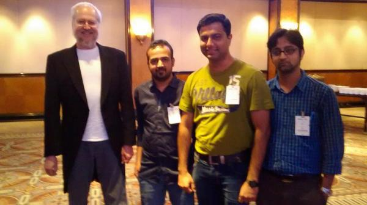
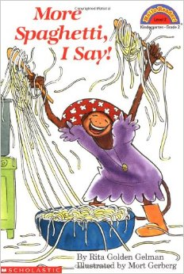
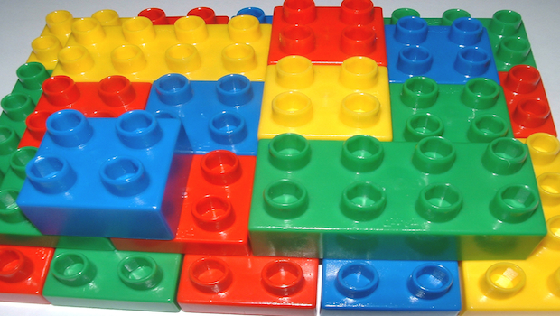
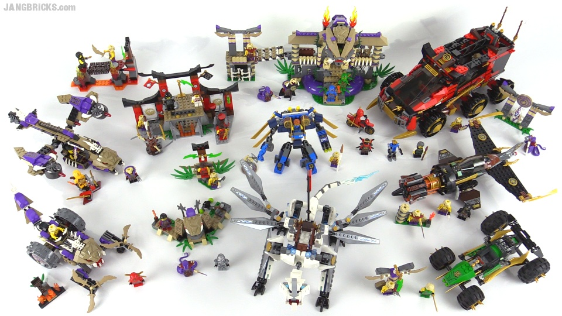

Functional Reactive JavaScript
- Workshop @JSChannel
Prerequisites:
- Firefox v22+
- Firebug
- Any text editor
Welcome to JSChannel
- Since 2013
- 25+ Meetups
- 3 Conferences
- Next conference on 17 - 18 July, 2015
- Sole member of JSConf family in India
Discount code just for you all:
JSC-MUM
@JSChannel Conference 2014
Functional Reactive JavaScript
f(r(JS));
Notation Used in these slides:
$P
Get Perks for right answers.
Signs to be used by you:
understood ? up() : down();
!(in RTO || aTrafficPolice);
@pinakinmistry
$P
@Pykih
Agenda:
- Rise of JavaScript (20m)
- Hands on Functional JavaScript (1hr10m)
- Hands on Functional Reactive JavaScript (1hr)
- Coding an Observable from scratch (30m)
Show of Hands lllli
likeJS
|| loveJS ?
learnJS() : learnJS();
//Short answer: JavaScript is Awesome!
//Long answer: Proving the short answer in this workshop.
!loveAtFirstSight;
//Even I hated it initially!
myFirstEncounter();
Common (mis)Understanding:
- JavaScript is not a language.
- Doesn't even compile.
- Written in HTML file.
- Runs only in browser.
- Is it Still in Use?
- Worst case, how it's #trending?
What can we do with JavaScript?
- May don't wanna learn it!
- May avoid learning it even if forced to!
- May Ignore it!
Wait! Before You IGNORE it:
- It's #1 Language: http://redmonk.com
- Most hated to most loved language.
- Most trending language on Github.
- NPM is largest module repository.
- Compensating for all the hatred all these years.
- JavaScript is everywhere. Can't hide it.
- ES6 is coming! It'll find you.
- Catch it before it catches you!
Why JavaScript's #1?
How come JavaScript?
Come on, I thought it's Java/C#/Ruby/...
Questions: $P
- Birth Year?
- Birth Place?
- Birth Name? (Add Java cos it is popular)
- Father?
Slow Rise To The Top:
- 1995: Most Despised language due to B#@!# War! $P
- 2004: Gmail AJAXed us! $P
- 2006: jQuery's here for rescue! $P
- 2008: JavaScript Good Parts Book. Discovery of Decade!
- 2009: JavaScript Jumped off Browser! $P
- 2010: No Flash on iPhone/iPad; Go HTML5 Way!
- 2010: Beginnings of Modern JavaScript library Ecosystem!
- 2011: Javascript a first-class citizen in Windows 8!
- 2012: Rise of the single-page app frameworks!
- 2013: Firefox OS UI layer using JavaScript!
- 2014-15: JavaScript is Everywhere!
Present: Shower of JavaScript!
- BackboneJS
- EmberJS
- AngularJS
- ReactJS
- Aurelia
- BatmanJS
- PhantomJS
- NodeJS / ioJS
- Yeoman, Bower, Gulp, Karma, Jasmine, Protractor, ...
- microjs.com

Please ask me ... isn't this bad?
Let's get our hands lllli on function
JS functions are first class citizens. $P
Functions are callable objects:
function f() {
return 'Hello World';
}
//or
var f = function () {
return 'Hello World';
};
//Function being an object has properties and methods in it:
f.name //f
f.call() //'Hello World'
f.apply() //'Hello World'
//$P
f.prototype //?
f.arguments //?
//What's the other implicit argument to a function?
What is this? $P
Array object methods:
var a = [1, 2, 3];
a.forEach()
a.map()
a.filter()
a.reduce() //$P
a.some()
a.every()
a.indexOf()
Find common between 2 arrays:
var a = [1, 2, 5, 4, 3];
var b = [5, 6, 3, 2];
function findCommon(a, b) {
var common = [];
a.forEach(//Write the logic here
//...
);
return common;
}
Common between 2 or more arrays?
var a = [1, 2, 5, 4, 3];
var b = [5, 6, 3, 1, 2, 7];
var c = [6, 1, 3, 2];
var d = [6, 8, 2, 1, 3];
function findCommon() {
var common = [];
a.forEach(//Write the logic here
//...
);
return common;
}
Functional Programming:
- Functions are "first-class" objects
- High-Order Functions
- Functions can return functions
- Lexical closures
- Functions are "pure"
- Safe Recursion
- Immutable state
Higher Order Functions?
y = f(x)
//when did we learn functions in school?
y = f(f(x))
//I used to hide under the bench on this topic. Seriously.
//Same is true with many developers today.
Hide details, give me the f(g)ist:
var total = 0, count = 1;
while (count <= 10) {
total += count;
count += 1;
}
console.log(total);
//Using Higher Order Functions:
console.log(sum(range(1, 10)));
Recipe Analogy:
Put 1 cup of dried peas per person into a container. Add water until the peas are well covered. Leave the peas in water for at least 12 hours. Take the peas out of the water and put them in a cooking pan. Add 4 cups of water per person. Cover the pan and keep the peas simmering for two hours. Take half an onion per person. Cut it into pieces with a knife. Add it to the peas. Take a stalk of celery per person. Cut it into pieces with a knife. Add it to the peas. Take a carrot per person. Cut it into pieces. With a knife! Add it to the peas. Cook for 10 more minutes.
What's this approach called? Procedural.
Higher Order Recipe:
Per person: 1 cup dried split peas, half a chopped onion, a stalk of celery, and a carrot.
Soak peas for 12 hours. Simmer for 2 hours in 4 cups of water (per person). Chop and add vegetables. Cook for 10 more minutes.
What's this approach? $P
Abstraction!
- A large program is costly.
- Difficult to read, understand & change.
- It invites bugs that are hard to find.
- Fixing a bug may give rise to more bugs.
- It's called Spaghetti Code.
- Abstraction helps avoid this Spaghetti.
Spaghetti leads to more Spaghetti!
Abstracting array traversal:
var a = [1, 2, 3];
//Procedural way:
for (var i = 0; i < array.length; i++) {
var current = array[i];
console.log(current);
}
//Abstract logEach:
function logEach(array) {
for (var i = 0; i < array.length; i++)
console.log(array[i]);
}
//So readable:
logEach(a); //1, 2, 3
Passing action function to forEach:
Array.prototype.forEach = function(action) {
for (var i = 0; i < this.length; i++) {
action(this[i]);
}
};
//f(f(x)):
["Log", "me", "in", "console"].forEach(console.log);
Higher-order functions:
- Abstract/hide details to focus on problem at higher level.
- Follow Single Responsibility Principle.
- Operate on other functions ...
- by accepting them as arguments ...
- or by returning a new function.
What is this called?
Composition:
Build things with functional components:
Like building blocks:
Modules, Web Components => Lego Game
Function in ES5
f = function (x) { return x + 1; }Changes to:
f = x => x + 1in ES6
$P
What is this called?
Exercises 1 - 20
@jhusain.github.io/learnrxUse Firefox v22+ for ES6 Arrow function
Top rated Movies Collection:
var getTopRatedFilms = user =>
user.videoLists
.map(videoList =>
videoList.videos
.filter(video => video.rating === 5.0))
.concatAll();
getTopRatedFilms(user)
.forEach(film => console.log(film));
Mouse Drags Collection:
var getElementDrags = elmt =>
elmt.mouseDowns
.map(mouseDown =>
document.mouseMoves
.takeUntil(document.mouseUps))
.concatAll();
getElementDrags(image)
.forEach(pos => image.position = pos);
Reactive Functional Programming using Observable:
- Observable = Collection over time
- Treat multiple asynchronous data/events as Collection
- Handle them using forEach, map, filter, concatAll, etc.
- Elegant way of writing asynchronous programming
Exercises 27 - 36
@jhusain.github.io/learnrxCoding Observable from Scratch:
function Observable(forEach) {
//An observable takes a forEach function as input
//and holds onto to it in internal _forEach property.
this._forEach = forEach;
}
Adding forEach in Observable's API:
Observable.prototype.forEach = function (onNext, onError, onCompleted) {
//API for obserable.forEach(onNext => ..., e => ..., c => ...)
if(typeof onNext === 'function') {
//create an observer object and assign
//the 3 argument functions to it
return this._forEach({
onNext: onNext,
onError: onError || function () {},
onCompleted: onCompleted || function () {}
});
} else {
//API for obserable.forEach(
// {onNext: x => ...,
// onError: e => ...,
// onCompleted: c => ...})
return this._forEach(onNext)
}
};
Adding map method:
Observable.prototype.map = function (transformationFunction) {
//$P
var self = this;
return new Observable(function forEach(observer) {
return self.forEach(
function onNext(event) {
observer.onNext(transformationFunction(event));
},
function onError(event) {
observer.onError(event);
},
function onCompleted() {
observer.onCompleted();
}
);
});
};
self = thisDream || outerWorld;
Adding filter method:
Observable.prototype.filter = function (testFunction) {
var self = this; //source observable
return new Observable(function forEach(observer) {
return self.forEach(
function onNext(event) {
if(testFunction(event)) {
observer.onNext(event);
}
},
function onError(event) { observer.onError(event); },
function onCompleted() { observer.onCompleted(); }
);
});
}
Adding take method:
Observable.prototype.take = function (limitTo) {
var self = this;
return Observable(function forEach(observer) {
var counter = 0,
subcription = self.forEach(
function onNext(v) {
observer.onNext(v);
counter++;
if(counter === limitTo) {
observer.onCompleted();
subcription.dispose();
}
},
function onError(e) {
observer.onError(e);
},
function onCompleted() {
observer.onCompleted();
}
);
return subcription;
});
}
Adding fromEvent method:
Observable.fromEvent = function(domElement, eventName) {
return new Observable(function forEach(observer) {
var handler = function(event) {
observer.onNext(event);
};
domElement.addEventListener(eventName, handler);
//Subcription object
return {
dispose: function () {
domElement.removeEventListener(eventName, handler);
}
};
});
};
Mouse clicks as observable:
var button = document.getElementById("button");
var clicks =
Observable
.fromEvent(button, "click")
.map(function (e) {
return e;
});
console.log(clicks);
clicks.forEach(function (e) {
console.log(e.pageX, e.pageY);
});
You need some <html> as well:
<html>
<head></head>
<body>
</body>
</html>
See you again in 3 weeks. Code Best!